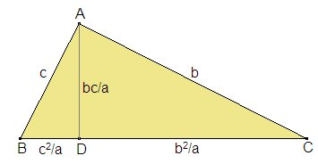
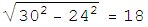

|
Un cateto de un triángulo rectángulo mide 30 cm, y la altura relativa a la hipotenusa mide 24 cm. Calcular: 1. La proyección del cateto sobre la hipotenusa |
|
Lazcano, I. Barolo, P. (1991): Matemáticas 7º EGB. Edelvives. Zaragoza (pag 165) |

1. Si, usando la figura, es AB = 30 cm y AD = 24 cm, entonces será BD =
cm.2. Entonces c=30 y 302/a = 18, de donde a=50 cm y DC = 50- 18 =32 cm.
3. De AB = 30 y BC = 50 obtenemos AC = 40 por el teorema de Pitágoras.
4. El área es (1/2) ·30 ·40 = 600 cm2.
Construcción gráfica. El siguiente applet de CabriJava muestra la solución gráfica del problema, cuando son dados los segmentos AB y AD.